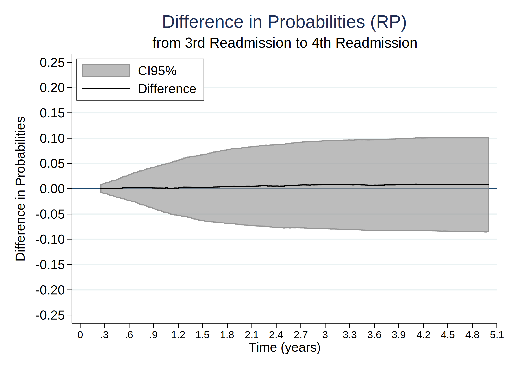
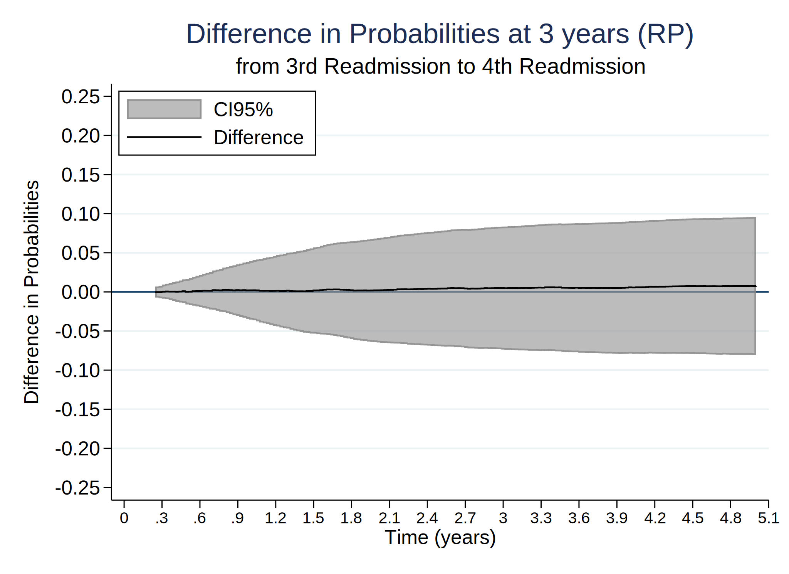
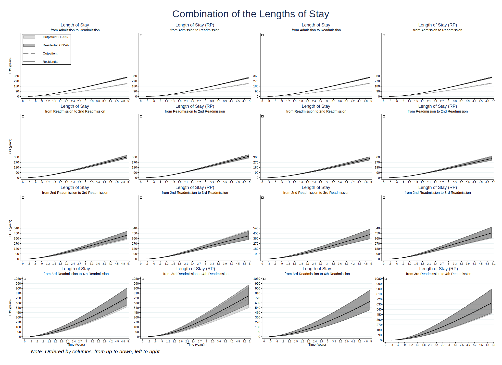

Date created: 6 Aug 2021.
Install commands that are unavailable or out of date.
. clear all
.
. cap noi which predictms
C:\Users\CISS Fondecyt\ado\plus\p\predictms.ado
*! version 4.3.0 14mar2021 MJC
. if _rc==111 {
. cap noi net install multistate, from("https://www.mjcrowther.co.uk/code/multistate")
. }
. cap noi which merlin
C:\Users\CISS Fondecyt\ado\plus\m\merlin.ado
*! version 2.0.2 19mar2021 MJC
. if _rc==111 {
. cap noi net install merlin, from("https://www.mjcrowther.co.uk/code/merlin/")
. }
. cap noi which sumat
C:\Users\CISS Fondecyt\ado\plus\s\sumat.ado
*! Part of package matrixtools v. 0.25
*! Support: Niels Henrik Bruun, niels.henrik.bruun@gmail.com
*! 2021-01-03 toxl added
. if _rc==111 {
. cap noi scc install matrixtools
. }
. cap noi which estwrite
C:\Users\CISS Fondecyt\ado\plus\e\estwrite.ado
*! version 1.2.4 04sep2009
*! version 1.0.1 15may2007 (renamed from -eststo- to -estwrite-; -append- added)
*! version 1.0.0 29apr2005 Ben Jann (ETH Zurich)
. if _rc==111 {
. cap noi ssc install estwrite
. }
We need to obtain the file and the work folder.
. mata : st_numscalar("OK", direxists("/volumes/sdrive/data//"))
. if scalar(OK) == 1 {
. cap noi cd "/volumes/sdrive/data//"
. global pathdata "/volumes/sdrive/data//"
. di "Location= ${pathdata}; Date: `c(current_date)', considering an OS `c(os)' for the user: `c(username)'"
. }
. else display "This file does not exist"
This file does not exist
.
. mata : st_numscalar("OK", direxists("E:\Mi unidad\Alvacast\SISTRAT 2019 (github)\_mult_state_ags\"))
. if scalar(OK) == 1 {
. cap noi cd "E:\Mi unidad\Alvacast\SISTRAT 2019 (github)\_mult_state_ags"
. global pathdata "E:\Mi unidad\Alvacast\SISTRAT 2019 (github)\_mult_state_ags"
. global pathdata2 "E:/Mi unidad/Alvacast/SISTRAT 2019 (github)/_mult_state_ags/"
. di "Location= ${pathdata}; Date: `c(current_date)', considering an OS `c(os)' for the user: `c(username)'"
. }
. else display "This file does not exist"
This file does not exist
.
. mata : st_numscalar("OK", direxists("G:\Mi unidad\Alvacast\SISTRAT 2019 (github)\_mult_state_ags\"))
. if scalar(OK) == 1 {
. cap noi cd "G:\Mi unidad\Alvacast\SISTRAT 2019 (github)\_mult_state_ags"
. global pathdata "G:\Mi unidad\Alvacast\SISTRAT 2019 (github)\_mult_state_ags"
. global pathdata2 "G:/Mi unidad/Alvacast/SISTRAT 2019 (github)/_mult_state_ags/"
. di "Location= ${pathdata}; Date: `c(current_date)', considering an OS `c(os)' for the user: `c(username)'"
. }
. else display "This file does not exist"
This file does not exist
.
. mata : st_numscalar("OK", direxists("C:\Users\CISS Fondecyt\Mi unidad\Alvacast\SISTRAT 2019 (github)\_mult_state_ags\"))
. if scalar(OK) == 1 {
. cap noi cd "C:\Users\CISS Fondecyt\Mi unidad\Alvacast\SISTRAT 2019 (github)"
C:\Users\CISS Fondecyt\Mi unidad\Alvacast\SISTRAT 2019 (github)
. global pathdata "C:\Users\CISS Fondecyt\Mi unidad\Alvacast\SISTRAT 2019 (github)\_mult_state_ags"
. global pathdata2 "C:/Users/CISS Fondecyt/Mi unidad/Alvacast/SISTRAT 2019 (github)/_mult_state_ags/"
. di "Location= ${pathdata}; Date: `c(current_date)', considering an OS `c(os)' for the user: `c(username)'"
Location= C:\Users\CISS Fondecyt\Mi unidad\Alvacast\SISTRAT 2019 (github)\_mult_state_ags; Date: 6 Aug 2021, considering an OS Windows for the user: CISS Fondecyt
. }
. else display "This file does not exist"
.
. mata : st_numscalar("OK", direxists("C:\Users\andre\Desktop\_mult_state_ags\"))
. if scalar(OK) == 1 {
. cap noi cd "C:\Users\andre\Desktop\_mult_state_ags"
. global pathdata "C:\Users\andre\Desktop\_mult_state_ags"
. global pathdata2 "C:/Users/andre/Desktop/_mult_state_ags/"
. di "Location= ${pathdata}; Date: `c(current_date)', considering an OS `c(os)' for the user: `c(username)'"
. }
. else display "This file does not exist"
This file does not exist
.
. mata : st_numscalar("OK", direxists("C:\Users\CISS Fondecyt\OneDrive\Documentos\"))
. if scalar(OK) == 1 {
. cap noi cd "C:\Users\CISS Fondecyt\Mi unidad\Alvacast\SISTRAT 2019 (github)\_mult_state_ags"
C:\Users\CISS Fondecyt\Mi unidad\Alvacast\SISTRAT 2019 (github)\_mult_state_ags
. global pathdata "C:\Users\CISS Fondecyt\Mi unidad\Alvacast\SISTRAT 2019 (github)\_mult_state_ags"
. global pathdata2 "C:/Users/CISS Fondecyt/Mi unidad/Alvacast/SISTRAT 2019 (github)/_mult_state_ags/"
. di "Location= ${pathdata}; Date: `c(current_date)', considering an OS `c(os)' for the user: `c(username)'"
Location= C:\Users\CISS Fondecyt\Mi unidad\Alvacast\SISTRAT 2019 (github)\_mult_state_ags; Date: 6 Aug 2021, considering an OS Windows for the user: CISS Fondecyt
. }
. else display "This file does not exist"
.
Path data= C:\Users\CISS Fondecyt\Mi unidad\Alvacast\SISTRAT 2019 (github)_mult_state_ags;
Timestamp: 6 Aug 2021, considering that is a Windows OS for the username: CISS Fondecyt
The file is located and named as: C:/Users/CISS Fondecyt/Mi unidad/Alvacast/SISTRAT 2019 (github)/_mult_state_ags/archivo_multiestado3_ago.dta
Defined transition matrix.
=============================================================================
=============================================================================
. *Assessing and relaxing the Markov assumption in the illness-death model
. *Jonathan Broomfield1, Caroline E. Weibull2, and Michael J. Crowther
. *fratio_from1_2_lci_0)(fratio_from1_2_uci_0)(fratio_from1_2_0)(fdiff_prob_from1_2_lci_0)(fdiff_prob_from1_2_uci_0)(fdiff_prob_from1_2_0)
. tw (rarea fdiff_prob_from1_2_lci_0_2 fdiff_prob_from1_2_uci_0_2 timevar01, sort connect(stairstep stairstep) lcolor(gs8) color(gs8%65)) ///
> (line fdiff_prob_from1_2_0_2 timevar01, sort connect(stairstep stairstep) lcolor(black)), ///
> yline(0, lcolor(navy)) ///
> xtitle(Time (years)) ytitle(Difference in Probabilities) xlab(0(.3)5,labsize(small)) ylab(-.25(.05).25, /// *730
> angle(h) format(%4.2f)) legend(order(1 "CI95%" 2 "Difference") pos(11) ring(0) c(1)) ///
> title("Difference in Probabilities") name(diff_mod12_tc, replace) ///
> subtitle("from Admission to Readmission") /// * text(0.2 4 "Outpatient", size(small)) /// * text(0.29 4 "Residential", size(small)) ///
> graphregion(col(white)) saving(diff_mod12_tc_ago_mstate.gph, replace)
(file diff_mod12_tc_ago_mstate.gph saved)
. *graph export prob_trans_12.gph, replace
. tw (rarea fdiff_prob_from2_3_lci_0_2 fdiff_prob_from2_3_uci_0_2 timevar01, sort connect(stairstep stairstep) lcolor(gs8) color(gs8%65)) ///
> (line fdiff_prob_from2_3_0_2 timevar01, sort connect(stairstep stairstep) lcolor(black)), ///
> yline(0, lcolor(navy)) ///
> xtitle(Time (years)) ytitle(Difference in Probabilities) xlab(0(.3)5,labsize(small)) ylab(-.25(.05).25, /// *730
> angle(h) format(%4.2f)) legend(order(1 "CI95%" 2 "Difference") pos(11) ring(0) c(1)) ///
> title("Difference in Probabilities") name(diff_mod23_tc, replace) ///
> subtitle("from Readmission to 2nd Readmission") /// * text(0.2 4 "Outpatient", size(small)) /// * text(0.29 4 "Residential", size(small)) ///
> graphregion(col(white)) saving(diff_mod23_tc_ago_mstate.gph, replace)
(file diff_mod23_tc_ago_mstate.gph saved)
. *graph export prob_trans_23.gph, replace
. tw (rarea fdiff_prob_from3_4_lci_0_2 fdiff_prob_from3_4_uci_0_2 timevar01, sort connect(stairstep stairstep) lcolor(gs8) color(gs8%65)) ///
> (line fdiff_prob_from3_4_0_2 timevar01, sort connect(stairstep stairstep) lcolor(black)), ///
> yline(0, lcolor(navy)) ///
> xtitle(Time (years)) ytitle(Difference in Probabilities) xlab(0(.3)5,labsize(small)) ylab(-.25(.05).25, /// *730
> angle(h) format(%4.2f)) legend(order(1 "CI95%" 2 "Difference") pos(11) ring(0) c(1)) ///
> title("Difference in Probabilities") name(diff_mod34_tc, replace) ///
> subtitle("from 2nd Readmission to 3rd Readmission") /// * text(0.2 4 "Outpatient", size(small)) /// * text(0.29 4 "Residential", size(small)) ///
> graphregion(col(white)) saving(diff_mod34_tc_ago_mstate.gph, replace)
(file diff_mod34_tc_ago_mstate.gph saved)
. *graph export prob_trans_34.gph, replace
. tw (rarea fdiff_prob_from4_5_lci_0_2 fdiff_prob_from4_5_uci_0_2 timevar01, sort connect(stairstep stairstep) lcolor(gs8) color(gs8%65)) ///
> (line fdiff_prob_from4_5_0_2 timevar01, sort connect(stairstep stairstep) lcolor(black)), ///
> yline(0, lcolor(navy)) ///
> xtitle(Time (years)) ytitle(Difference in Probabilities) xlab(0(.3)5,labsize(small)) ylab(-.25(.05).25, /// *730
> angle(h) format(%4.2f)) legend(order(1 "CI95%" 2 "Difference") pos(11) ring(0) c(1)) ///
> title("Difference in Probabilities") name(diff_mod45_tc, replace) ///
> subtitle("from 3rd Readmission to 4th Readmission") /// * text(0.2 4 "Outpatient", size(small)) /// * text(0.29 4 "Residential", size(small)) ///
> graphregion(col(white)) saving(diff_mod45_tc_ago_mstate.gph, replace)
(file diff_mod45_tc_ago_mstate.gph saved)
. *graph export prob_trans_45.gph, replace
=============================================================================
=============================================================================
. *Assessing and relaxing the Markov assumption in the illness-death model
. *Jonathan Broomfield1, Caroline E. Weibull2, and Michael J. Crowther
. *fratio_from1_2_lci_0)(fratio_from1_2_uci_0)(fratio_from1_2_0)(fdiff_prob_from1_2_lci_0)(fdiff_prob_from1_2_uci_0)(fdiff_prob_from1_2_0)
. tw (rarea fdiff_prob_from1_2_lci_3y_2 fdiff_prob_from1_2_uci_3y_2 timevar01, sort connect(stairstep stairstep) lcolor(gs8) color(gs8%65)) ///
> (line fdiff_prob_from1_2_3y_2 timevar01, sort connect(stairstep stairstep) lcolor(black)), ///
> yline(0, lcolor(navy)) ///
> xtitle(Time (years)) ytitle(Difference in Probabilities) xlab(0(.3)5,labsize(small)) ylab(-.25(.05).25, /// *730
> angle(h) format(%4.2f)) legend(order(1 "CI95%" 2 "Difference") pos(11) ring(0) c(1)) ///
> title("Difference in Probabilities at 3 years") name(diff_mod12_3y_tc, replace) ///
> subtitle("from Admission to Readmission") /// * text(0.2 4 "Outpatient", size(small)) /// * text(0.29 4 "Residential", size(small)) ///
> graphregion(col(white)) saving(diff_mod12_3y_tc_ago_mstate.gph, replace)
(file diff_mod12_3y_tc_ago_mstate.gph saved)
. *graph export prob_trans_12.gph, replace
. tw (rarea fdiff_prob_from2_3_lci_3y_2 fdiff_prob_from2_3_uci_3y_2 timevar01, sort connect(stairstep stairstep) lcolor(gs8) color(gs8%65)) ///
> (line fdiff_prob_from2_3_3y_2 timevar01, sort connect(stairstep stairstep) lcolor(black)), ///
> yline(0, lcolor(navy)) ///
> xtitle(Time (years)) ytitle(Difference in Probabilities) xlab(0(.3)5,labsize(small)) ylab(-.25(.05).25, /// *730
> angle(h) format(%4.2f)) legend(order(1 "CI95%" 2 "Difference") pos(11) ring(0) c(1)) ///
> title("Difference in Probabilities at 3 years") name(diff_mod23_3y_tc, replace) ///
> subtitle("from Readmission to 2nd Readmission") /// * text(0.2 4 "Outpatient", size(small)) /// * text(0.29 4 "Residential", size(small)) ///
> graphregion(col(white)) saving(diff_mod23_3y_tc_ago_mstate.gph, replace)
(file diff_mod23_3y_tc_ago_mstate.gph saved)
. *graph export prob_trans_23.gph, replace
. tw (rarea fdiff_prob_from3_4_lci_3y_2 fdiff_prob_from3_4_uci_3y_2 timevar01, sort connect(stairstep stairstep) lcolor(gs8) color(gs8%65)) ///
> (line fdiff_prob_from3_4_3y_2 timevar01, sort connect(stairstep stairstep) lcolor(black)), ///
> yline(0, lcolor(navy)) ///
> xtitle(Time (years)) ytitle(Difference in Probabilities) xlab(0(.3)5,labsize(small)) ylab(-.25(.05).25, /// *730
> angle(h) format(%4.2f)) legend(order(1 "CI95%" 2 "Difference") pos(11) ring(0) c(1)) ///
> title("Difference in Probabilities at 3 years") name(diff_mod34_3y_tc, replace) ///
> subtitle("from 2nd Readmission to 3rd Readmission") /// * text(0.2 4 "Outpatient", size(small)) /// * text(0.29 4 "Residential", size(small)) ///
> graphregion(col(white)) saving(diff_mod34_3y_tc_ago_mstate.gph, replace)
(file diff_mod34_3y_tc_ago_mstate.gph saved)
. *graph export prob_trans_34.gph, replace
. tw (rarea fdiff_prob_from4_5_lci_3y_2 fdiff_prob_from4_5_uci_3y_2 timevar01, sort connect(stairstep stairstep) lcolor(gs8) color(gs8%65)) ///
> (line fdiff_prob_from4_5_3y_2 timevar01, sort connect(stairstep stairstep) lcolor(black)), ///
> yline(0, lcolor(navy)) ///
> xtitle(Time (years)) ytitle(Difference in Probabilities) xlab(0(.3)5,labsize(small)) ylab(-.25(.05).25, /// *730
> angle(h) format(%4.2f)) legend(order(1 "CI95%" 2 "Difference") pos(11) ring(0) c(1)) ///
> title("Difference in Probabilities at 3 years") name(diff_mod45_3y_tc, replace) ///
> subtitle("from 3rd Readmission to 4th Readmission") /// * text(0.2 4 "Outpatient", size(small)) /// * text(0.29 4 "Residential", size(small)) ///
> graphregion(col(white)) saving(diff_mod45_3y_tc_ago_mstate.gph, replace)
(file diff_mod45_3y_tc_ago_mstate.gph saved)
. *graph export prob_trans_45.gph, replace
=============================================================================
=============================================================================
. tw (rarea fratio_from1_2_lci_0_2 fratio_from1_2_uci_0_2 timevar01, sort connect(stairstep stairstep) lcolor(gs8) color(gs8%65)) ///
> (line fratio_from1_2_0_2 timevar01, sort connect(stairstep stairstep) lcolor(black)), ///
> yline(1, lcolor(navy)) ///
> xtitle(Time (years)) ytitle(Ratio in Probabilities) xlab(0(.3)5,labsize(small)) ylab(0(.5)9, /// *730
> angle(h) format(%4.2f)) legend(order(1 "CI95%" 2 "Difference") pos(11) ring(0) c(1)) ///
> title("Ratio in Probabilities") name(ratio_models12_tc, replace) ///
> subtitle("from Admission to Readmission") /// * text(0.2 4 "Outpatient", size(small)) /// * text(0.29 4 "Residential", size(small)) ///
> graphregion(col(white)) saving(ratio_models12_tc_ago_mstate.gph, replace)
(file ratio_models12_tc_ago_mstate.gph saved)
. tw (rarea fratio_from2_3_lci_0_2 fratio_from2_3_uci_0_2 timevar01, sort connect(stairstep stairstep) lcolor(gs8) color(gs8%65)) ///
> (line fratio_from2_3_0_2 timevar01, sort connect(stairstep stairstep) lcolor(black)), ///
> yline(1, lcolor(navy)) ///
> xtitle(Time (years)) ytitle(Ratio in Probabilities) xlab(0(.3)5,labsize(small)) ylab(0(.25)2, /// *730
> angle(h) format(%4.2f)) legend(order(1 "CI95%" 2 "Difference") pos(11) ring(0) c(1)) ///
> title("Ratio in Probabilities") name(ratio_models23_tc, replace) ///
> subtitle("from Readmission to 2nd Readmission") /// * text(0.2 4 "Outpatient", size(small)) /// * text(0.29 4 "Residential", size(small)) ///
> graphregion(col(white)) saving(ratio_models23_tc_ago_mstate.gph, replace)
(file ratio_models23_tc_ago_mstate.gph saved)
. tw (rarea fratio_from3_4_lci_0_2 fratio_from3_4_uci_0_2 timevar01, sort connect(stairstep stairstep) lcolor(gs8) color(gs8%65)) ///
> (line fratio_from3_4_0_2 timevar01, sort connect(stairstep stairstep) lcolor(black)), ///
> yline(1, lcolor(navy)) ///
> xtitle(Time (years)) ytitle(Ratio in Probabilities) xlab(0(.3)5,labsize(small)) ylab(0(.5)2, /// *730
> angle(h) format(%4.2f)) legend(order(1 "CI95%" 2 "Difference") pos(11) ring(0) c(1)) ///
> title("Ratio in Probabilities") name(ratio_models34_tc, replace) ///
> subtitle("from 2nd Readmission to 3rd Readmission") /// * text(0.2 4 "Outpatient", size(small)) /// * text(0.29 4 "Residential", size(small)) ///
> graphregion(col(white)) saving(ratio_models34_tc_ago_mstate.gph, replace)
(file ratio_models34_tc_ago_mstate.gph saved)
. tw (rarea fratio_from4_5_lci_0_2 fratio_from4_5_uci_0_2 timevar01, sort connect(stairstep stairstep) lcolor(gs8) color(gs8%65)) ///
> (line fratio_from4_5_0_2 timevar01, sort connect(stairstep stairstep) lcolor(black)), ///
> yline(1, lcolor(navy)) ///
> xtitle(Time (years)) ytitle(Ratio in Probabilities) xlab(0(.3)5,labsize(small)) ylab(0(.5)2, /// *730
> angle(h) format(%4.2f)) legend(order(1 "CI95%" 2 "Difference") pos(11) ring(0) c(1)) ///
> title("Ratio in Probabilities") name(ratio_models45_tc, replace) ///
> subtitle("from 3rd Readmission to 4th Readmission") /// * text(0.2 4 "Outpatient", size(small)) /// * text(0.29 4 "Residential", size(small)) ///
> graphregion(col(white)) saving(ratio_models45_tc_ago_mstate.gph, replace)
(file ratio_models45_tc_ago_mstate.gph saved)
=============================================================================
=============================================================================
. tw (rarea fratio_from1_2_lci_3y_2 fratio_from1_2_uci_3y_2 timevar01, sort connect(stairstep stairstep) lcolor(gs8) color(gs8%65)) ///
> (line fratio_from1_2_3y_2 timevar01, sort connect(stairstep stairstep) lcolor(black)), ///
> yline(1, lcolor(navy)) ///
> xtitle(Time (years)) ytitle(Ratio in Probabilities) xlab(0(.3)5,labsize(small)) ylab(0(.5)9, /// *730
> angle(h) format(%4.2f)) legend(order(1 "CI95%" 2 "Difference") pos(11) ring(0) c(1)) ///
> title("Ratio in Probabilities") name(ratio_models12_3y_tc, replace) ///
> subtitle("from Admission to Readmission") /// * text(0.2 4 "Outpatient", size(small)) /// * text(0.29 4 "Residential", size(small)) ///
> graphregion(col(white)) saving(ratio_models12_3y_tc_ago_mstate.gph, replace)
(file ratio_models12_3y_tc_ago_mstate.gph saved)
. tw (rarea fratio_from2_3_lci_3y_2 fratio_from2_3_uci_3y_2 timevar01, sort connect(stairstep stairstep) lcolor(gs8) color(gs8%65)) ///
> (line fratio_from2_3_3y_2 timevar01, sort connect(stairstep stairstep) lcolor(black)), ///
> yline(1, lcolor(navy)) ///
> xtitle(Time (years)) ytitle(Ratio in Probabilities) xlab(0(.3)5,labsize(small)) ylab(0(.5)2, /// *730
> angle(h) format(%4.2f)) legend(order(1 "CI95%" 2 "Difference") pos(11) ring(0) c(1)) ///
> title("Ratio in Probabilities") name(ratio_models23_3y_tc, replace) ///
> subtitle("from Readmission to 2nd Readmission") /// * text(0.2 4 "Outpatient", size(small)) /// * text(0.29 4 "Residential", size(small)) ///
> graphregion(col(white)) saving(ratio_models23_3y_tc_ago_mstate.gph, replace)
(file ratio_models23_3y_tc_ago_mstate.gph saved)
. tw (rarea fratio_from3_4_lci_3y_2 fratio_from3_4_uci_3y_2 timevar01, sort connect(stairstep stairstep) lcolor(gs8) color(gs8%65)) ///
> (line fratio_from3_4_3y_2 timevar01, sort connect(stairstep stairstep) lcolor(black)), ///
> yline(1, lcolor(navy)) ///
> xtitle(Time (years)) ytitle(Ratio in Probabilities) xlab(0(.3)5,labsize(small)) ylab(0(.5)2, /// *730
> angle(h) format(%4.2f)) legend(order(1 "CI95%" 2 "Difference") pos(11) ring(0) c(1)) ///
> title("Ratio in Probabilities") name(ratio_models34_3y_tc, replace) ///
> subtitle("from 2nd Readmission to 3rd Readmission") /// * text(0.2 4 "Outpatient", size(small)) /// * text(0.29 4 "Residential", size(small)) ///
> graphregion(col(white)) saving(ratio_models34_3y_tc_ago_mstate.gph, replace)
(file ratio_models34_3y_tc_ago_mstate.gph saved)
. tw (rarea fratio_from4_5_lci_3y_2 fratio_from4_5_uci_3y_2 timevar01, sort connect(stairstep stairstep) lcolor(gs8) color(gs8%65)) ///
> (line fratio_from4_5_3y_2 timevar01, sort connect(stairstep stairstep) lcolor(black)), ///
> yline(1, lcolor(navy)) ///
> xtitle(Time (years)) ytitle(Ratio in Probabilities) xlab(0(.3)5,labsize(small)) ylab(0(.5)2, /// *730
> angle(h) format(%4.2f)) legend(order(1 "CI95%" 2 "Difference") pos(11) ring(0) c(1)) ///
> title("Ratio in Probabilities") name(ratio_models45_3y_tc, replace) ///
> subtitle("from 3rd Readmission to 4th Readmission") /// * text(0.2 4 "Outpatient", size(small)) /// * text(0.29 4 "Residential", size(small)) ///
> graphregion(col(white)) saving(ratio_models45_3y_tc_ago_mstate.gph, replace)
(file ratio_models45_3y_tc_ago_mstate.gph saved)
=============================================================================
=============================================================================
. *Assessing and relaxing the Markov assumption in the illness-death model
. *Jonathan Broomfield1, Caroline E. Weibull2, and Michael J. Crowther
. *fratio_from1_2_lci_0)(fratio_from1_2_uci_0)(fratio_from1_2_0)(fdiff_prob_from1_2_lci_0)(fdiff_prob_from1_2_uci_0)(fdiff_prob_from1_2_0)
. tw (rarea fdiff_prob_from1_2_lci_rp_0_2 fdiff_prob_from1_2_uci_rp_0_2 timevar01, sort connect(stairstep stairstep) lcolor(gs8) color(gs8%65)) ///
> (line fdiff_prob_from1_2_rp_0_2 timevar01, sort connect(stairstep stairstep) lcolor(black)), ///
> yline(0, lcolor(navy)) ///
> xtitle(Time (years)) ytitle(Difference in Probabilities) xlab(0(.3)5,labsize(small)) ylab(-.25(.05).25, /// *730
> angle(h) format(%4.2f)) legend(order(1 "CI95%" 2 "Difference") pos(11) ring(0) c(1)) ///
> title("Difference in Probabilities (RP)") name(diff_mod12_rp_tc, replace) ///
> subtitle("from Admission to Readmission") /// * text(0.2 4 "Outpatient", size(small)) /// * text(0.29 4 "Residential", size(small)) ///
> graphregion(col(white)) saving(diff_mod12_rp_tc_ago_mstate.gph, replace)
(file diff_mod12_rp_tc_ago_mstate.gph saved)
. *graph export prob_trans_12.gph, replace
. tw (rarea fdiff_prob_from2_3_lci_rp_0_2 fdiff_prob_from2_3_uci_rp_0_2 timevar01, sort connect(stairstep stairstep) lcolor(gs8) color(gs8%65)) ///
> (line fdiff_prob_from2_3_rp_0_2 timevar01, sort connect(stairstep stairstep) lcolor(black)), ///
> yline(0, lcolor(navy)) ///
> xtitle(Time (years)) ytitle(Difference in Probabilities) xlab(0(.3)5,labsize(small)) ylab(-.25(.05).25, /// *730
> angle(h) format(%4.2f)) legend(order(1 "CI95%" 2 "Difference") pos(11) ring(0) c(1)) ///
> title("Difference in Probabilities (RP)") name(diff_mod23_rp_tc, replace) ///
> subtitle("from Readmission to 2nd Readmission") /// * text(0.2 4 "Outpatient", size(small)) /// * text(0.29 4 "Residential", size(small)) ///
> graphregion(col(white)) saving(diff_mod23_rp_tc_ago_mstate.gph, replace)
(file diff_mod23_rp_tc_ago_mstate.gph saved)
. *graph export prob_trans_23.gph, replace
. tw (rarea fdiff_prob_from3_4_lci_rp_0_2 fdiff_prob_from3_4_uci_rp_0_2 timevar01, sort connect(stairstep stairstep) lcolor(gs8) color(gs8%65)) ///
> (line fdiff_prob_from3_4_rp_0_2 timevar01, sort connect(stairstep stairstep) lcolor(black)), ///
> yline(0, lcolor(navy)) ///
> xtitle(Time (years)) ytitle(Difference in Probabilities) xlab(0(.3)5,labsize(small)) ylab(-.25(.05).25, /// *730
> angle(h) format(%4.2f)) legend(order(1 "CI95%" 2 "Difference") pos(11) ring(0) c(1)) ///
> title("Difference in Probabilities (RP)") name(diff_mod34_rp_tc, replace) ///
> subtitle("from 2nd Readmission to 3rd Readmission") /// * text(0.2 4 "Outpatient", size(small)) /// * text(0.29 4 "Residential", size(small)) ///
> graphregion(col(white)) saving(diff_mod34_rp_tc_ago_mstate.gph, replace)
(file diff_mod34_rp_tc_ago_mstate.gph saved)
. *graph export prob_trans_34.gph, replace
. tw (rarea fdiff_prob_from4_5_lci_rp_0_2 fdiff_prob_from4_5_uci_rp_0_2 timevar01, sort connect(stairstep stairstep) lcolor(gs8) color(gs8%65)) ///
> (line fdiff_prob_from4_5_rp_0_2 timevar01, sort connect(stairstep stairstep) lcolor(black)), ///
> yline(0, lcolor(navy)) ///
> xtitle(Time (years)) ytitle(Difference in Probabilities) xlab(0(.3)5,labsize(small)) ylab(-.25(.05).25, /// *730
> angle(h) format(%4.2f)) legend(order(1 "CI95%" 2 "Difference") pos(11) ring(0) c(1)) ///
> title("Difference in Probabilities (RP)") name(diff_mod45_rp_tc, replace) ///
> subtitle("from 3rd Readmission to 4th Readmission") /// * text(0.2 4 "Outpatient", size(small)) /// * text(0.29 4 "Residential", size(small)) ///
> graphregion(col(white)) saving(diff_mod45_rp_tc_ago_mstate.gph, replace)
(file diff_mod45_rp_tc_ago_mstate.gph saved)
. *graph export prob_trans_45.gph, replace

=============================================================================
=============================================================================
. *Assessing and relaxing the Markov assumption in the illness-death model
. *Jonathan Broomfield1, Caroline E. Weibull2, and Michael J. Crowther
. *fratio_from1_2_lci_0)(fratio_from1_2_uci_0)(fratio_from1_2_0)(fdiff_prob_from1_2_lci_0)(fdiff_prob_from1_2_uci_0)(fdiff_prob_from1_2_0)
. tw (rarea fdiff_prob_from1_2_lci_rp_3y_2 fdiff_prob_from1_2_uci_rp_3y_2 timevar01, sort connect(stairstep stairstep) lcolor(gs8) color(gs8%65)) ///
> (line fdiff_prob_from1_2_rp_3y_2 timevar01, sort connect(stairstep stairstep) lcolor(black)), ///
> yline(0, lcolor(navy)) ///
> xtitle(Time (years)) ytitle(Difference in Probabilities) xlab(0(.3)5,labsize(small)) ylab(-.25(.05).25, /// *730
> angle(h) format(%4.2f)) legend(order(1 "CI95%" 2 "Difference") pos(11) ring(0) c(1)) ///
> title("Difference in Probabilities at 3 years (RP)") name(diff_mod12_3y_rp_tc, replace) ///
> subtitle("from Admission to Readmission") /// * text(0.2 4 "Outpatient", size(small)) /// * text(0.29 4 "Residential", size(small)) ///
> graphregion(col(white)) saving(diff_mod12_3y_rp_tc_ago_mstate.gph, replace)
(file diff_mod12_3y_rp_tc_ago_mstate.gph saved)
. *graph export prob_trans_12.gph, replace
. tw (rarea fdiff_prob_from2_3_lci_rp_3y_2 fdiff_prob_from2_3_uci_rp_3y_2 timevar01, sort connect(stairstep stairstep) lcolor(gs8) color(gs8%65)) ///
> (line fdiff_prob_from2_3_rp_3y_2 timevar01, sort connect(stairstep stairstep) lcolor(black)), ///
> yline(0, lcolor(navy)) ///
> xtitle(Time (years)) ytitle(Difference in Probabilities) xlab(0(.3)5,labsize(small)) ylab(-.25(.05).25, /// *730
> angle(h) format(%4.2f)) legend(order(1 "CI95%" 2 "Difference") pos(11) ring(0) c(1)) ///
> title("Difference in Probabilities at 3 years (RP)") name(diff_mod23_3y_rp_tc, replace) ///
> subtitle("from Readmission to 2nd Readmission") /// * text(0.2 4 "Outpatient", size(small)) /// * text(0.29 4 "Residential", size(small)) ///
> graphregion(col(white)) saving(diff_mod23_3y_rp_tc_ago_mstate.gph, replace)
(file diff_mod23_3y_rp_tc_ago_mstate.gph saved)
. *graph export prob_trans_23.gph, replace
. tw (rarea fdiff_prob_from3_4_lci_rp_3y_2 fdiff_prob_from3_4_uci_rp_3y_2 timevar01, sort connect(stairstep stairstep) lcolor(gs8) color(gs8%65)) ///
> (line fdiff_prob_from3_4_rp_3y_2 timevar01, sort connect(stairstep stairstep) lcolor(black)), ///
> yline(0, lcolor(navy)) ///
> xtitle(Time (years)) ytitle(Difference in Probabilities) xlab(0(.3)5,labsize(small)) ylab(-.25(.05).25, /// *730
> angle(h) format(%4.2f)) legend(order(1 "CI95%" 2 "Difference") pos(11) ring(0) c(1)) ///
> title("Difference in Probabilities at 3 years (RP)") name(diff_mod34_3y_rp_tc, replace) ///
> subtitle("from 2nd Readmission to 3rd Readmission") /// * text(0.2 4 "Outpatient", size(small)) /// * text(0.29 4 "Residential", size(small)) ///
> graphregion(col(white)) saving(diff_mod34_3y_rp_tc_ago_mstate.gph, replace)
(file diff_mod34_3y_rp_tc_ago_mstate.gph saved)
. *graph export prob_trans_34.gph, replace
. tw (rarea fdiff_prob_from4_5_lci_rp_3y_2 fdiff_prob_from4_5_uci_rp_3y_2 timevar01, sort connect(stairstep stairstep) lcolor(gs8) color(gs8%65)) ///
> (line fdiff_prob_from4_5_rp_3y_2 timevar01, sort connect(stairstep stairstep) lcolor(black)), ///
> yline(0, lcolor(navy)) ///
> xtitle(Time (years)) ytitle(Difference in Probabilities) xlab(0(.3)5,labsize(small)) ylab(-.25(.05).25, /// *730
> angle(h) format(%4.2f)) legend(order(1 "CI95%" 2 "Difference") pos(11) ring(0) c(1)) ///
> title("Difference in Probabilities at 3 years (RP)") name(diff_mod45_3y_rp_tc, replace) ///
> subtitle("from 3rd Readmission to 4th Readmission") /// * text(0.2 4 "Outpatient", size(small)) /// * text(0.29 4 "Residential", size(small)) ///
> graphregion(col(white)) saving(diff_mod45_3y_rp_tc_ago_mstate.gph, replace)
(file diff_mod45_3y_rp_tc_ago_mstate.gph saved)
. *graph export prob_trans_45.gph, replace

=============================================================================
=============================================================================
. tw (rarea fratio_from1_2_lci_rp_0_2 fratio_from1_2_uci_rp_0_2 timevar01, sort connect(stairstep stairstep) lcolor(gs8) color(gs8%65)) ///
> (line fratio_from1_2_rp_0_2 timevar01, sort connect(stairstep stairstep) lcolor(black)), ///
> yline(1, lcolor(navy)) ///
> xtitle(Time (years)) ytitle(Ratio in Probabilities) xlab(0(.3)5,labsize(small)) ylab(0(.5)3, /// *730
> angle(h) format(%4.2f)) legend(order(1 "CI95%" 2 "Difference") pos(11) ring(0) c(1)) ///
> title("Ratio in Probabilities (RP)") name(ratio_models12_rp_tc, replace) ///
> subtitle("from Admission to Readmission") /// * text(0.2 4 "Outpatient", size(small)) /// * text(0.29 4 "Residential", size(small)) ///
> graphregion(col(white)) saving(ratio_models12_rp_tc_ago_mstate.gph, replace)
(file ratio_models12_rp_tc_ago_mstate.gph saved)
. tw (rarea fratio_from2_3_lci_rp_0_2 fratio_from2_3_uci_rp_0_2 timevar01, sort connect(stairstep stairstep) lcolor(gs8) color(gs8%65)) ///
> (line fratio_from2_3_rp_0_2 timevar01, sort connect(stairstep stairstep) lcolor(black)), ///
> yline(1, lcolor(navy)) ///
> xtitle(Time (years)) ytitle(Ratio in Probabilities) xlab(0(.3)5,labsize(small)) ylab(0(.25)2, /// *730
> angle(h) format(%4.2f)) legend(order(1 "CI95%" 2 "Difference") pos(11) ring(0) c(1)) ///
> title("Ratio in Probabilities (RP)") name(ratio_models23_rp_tc, replace) ///
> subtitle("from Readmission to 2nd Readmission") /// * text(0.2 4 "Outpatient", size(small)) /// * text(0.29 4 "Residential", size(small)) ///
> graphregion(col(white)) saving(ratio_models23_rp_tc_ago_mstate.gph, replace)
(file ratio_models23_rp_tc_ago_mstate.gph saved)
. tw (rarea fratio_from3_4_lci_rp_0_2 fratio_from3_4_uci_rp_0_2 timevar01, sort connect(stairstep stairstep) lcolor(gs8) color(gs8%65)) ///
> (line fratio_from3_4_rp_0_2 timevar01, sort connect(stairstep stairstep) lcolor(black)), ///
> yline(1, lcolor(navy)) ///
> xtitle(Time (years)) ytitle(Ratio in Probabilities) xlab(0(.3)5,labsize(small)) ylab(0(.5)2, /// *730
> angle(h) format(%4.2f)) legend(order(1 "CI95%" 2 "Difference") pos(11) ring(0) c(1)) ///
> title("Ratio in Probabilities (RP)") name(ratio_models34_rp_tc, replace) ///
> subtitle("from 2nd Readmission to 3rd Readmission") /// * text(0.2 4 "Outpatient", size(small)) /// * text(0.29 4 "Residential", size(small)) ///
> graphregion(col(white)) saving(ratio_models34_rp_tc_ago_mstate.gph, replace)
(file ratio_models34_rp_tc_ago_mstate.gph saved)
. tw (rarea fratio_from4_5_lci_rp_0_2 fratio_from4_5_uci_rp_0_2 timevar01, sort connect(stairstep stairstep) lcolor(gs8) color(gs8%65)) ///
> (line fratio_from4_5_rp_0_2 timevar01, sort connect(stairstep stairstep) lcolor(black)), ///
> yline(1, lcolor(navy)) ///
> xtitle(Time (years)) ytitle(Ratio in Probabilities) xlab(0(.3)5,labsize(small)) ylab(0(.5)2, /// *730
> angle(h) format(%4.2f)) legend(order(1 "CI95%" 2 "Difference") pos(11) ring(0) c(1)) ///
> title("Ratio in Probabilities (RP)") name(ratio_models45_rp_tc, replace) ///
> subtitle("from 3rd Readmission to 4th Readmission") /// * text(0.2 4 "Outpatient", size(small)) /// * text(0.29 4 "Residential", size(small)) ///
> graphregion(col(white)) saving(ratio_models45_rp_tc_ago_mstate.gph, replace)
(file ratio_models45_rp_tc_ago_mstate.gph saved)
=============================================================================
=============================================================================
. tw (rarea fratio_from1_2_lci_rp_3y_2 fratio_from1_2_uci_rp_3y_2 timevar01, sort connect(stairstep stairstep) lcolor(gs8) color(gs8%65)) ///
> (line fratio_from1_2_rp_3y_2 timevar01, sort connect(stairstep stairstep) lcolor(black)), ///
> yline(1, lcolor(navy)) ///
> xtitle(Time (years)) ytitle(Ratio in Probabilities) xlab(0(.3)5,labsize(small)) ylab(0(.5)2, /// *730
> angle(h) format(%4.2f)) legend(order(1 "CI95%" 2 "Difference") pos(11) ring(0) c(1)) ///
> title("Ratio in Probabilities (RP)") name(ratio_models12_3y_rp_tc, replace) ///
> subtitle("from Admission to Readmission") /// * text(0.2 4 "Outpatient", size(small)) /// * text(0.29 4 "Residential", size(small)) ///
> graphregion(col(white)) saving(ratio_models12_3y_rp_tc_ago_mstate.gph, replace)
(file ratio_models12_3y_rp_tc_ago_mstate.gph saved)
. tw (rarea fratio_from2_3_lci_rp_3y_2 fratio_from2_3_uci_rp_3y_2 timevar01, sort connect(stairstep stairstep) lcolor(gs8) color(gs8%65)) ///
> (line fratio_from2_3_rp_3y_2 timevar01, sort connect(stairstep stairstep) lcolor(black)), ///
> yline(1, lcolor(navy)) ///
> xtitle(Time (years)) ytitle(Ratio in Probabilities) xlab(0(.3)5,labsize(small)) ylab(0(.5)2, /// *730
> angle(h) format(%4.2f)) legend(order(1 "CI95%" 2 "Difference") pos(11) ring(0) c(1)) ///
> title("Ratio in Probabilities (RP)") name(ratio_models23_3y_rp_tc, replace) ///
> subtitle("from Readmission to 2nd Readmission") /// * text(0.2 4 "Outpatient", size(small)) /// * text(0.29 4 "Residential", size(small)) ///
> graphregion(col(white)) saving(ratio_models23_3y_rp_tc_ago_mstate.gph, replace)
(file ratio_models23_3y_rp_tc_ago_mstate.gph saved)
. tw (rarea fratio_from3_4_lci_rp_3y_2 fratio_from3_4_uci_rp_3y_2 timevar01, sort connect(stairstep stairstep) lcolor(gs8) color(gs8%65)) ///
> (line fratio_from3_4_rp_3y_2 timevar01, sort connect(stairstep stairstep) lcolor(black)), ///
> yline(1, lcolor(navy)) ///
> xtitle(Time (years)) ytitle(Ratio in Probabilities) xlab(0(.3)5,labsize(small)) ylab(0(.5)2, /// *730
> angle(h) format(%4.2f)) legend(order(1 "CI95%" 2 "Difference") pos(11) ring(0) c(1)) ///
> title("Ratio in Probabilities (RP)") name(ratio_models34_3y_rp_tc, replace) ///
> subtitle("from 2nd Readmission to 3rd Readmission") /// * text(0.2 4 "Outpatient", size(small)) /// * text(0.29 4 "Residential", size(small)) ///
> graphregion(col(white)) saving(ratio_models34_3y_rp_tc_ago_mstate.gph, replace)
(file ratio_models34_3y_rp_tc_ago_mstate.gph saved)
. tw (rarea fratio_from4_5_lci_rp_3y_2 fratio_from4_5_uci_rp_3y_2 timevar01, sort connect(stairstep stairstep) lcolor(gs8) color(gs8%65)) ///
> (line fratio_from4_5_rp_3y_2 timevar01, sort connect(stairstep stairstep) lcolor(black)), ///
> yline(1, lcolor(navy)) ///
> xtitle(Time (years)) ytitle(Ratio in Probabilities) xlab(0(.3)5,labsize(small)) ylab(0(.5)2, /// *730
> angle(h) format(%4.2f)) legend(order(1 "CI95%" 2 "Difference") pos(11) ring(0) c(1)) ///
> title("Ratio in Probabilities (RP)") name(ratio_models45_3y_rp_tc, replace) ///
> subtitle("from 3rd Readmission to 4th Readmission") /// * text(0.2 4 "Outpatient", size(small)) /// * text(0.29 4 "Residential", size(small)) ///
> graphregion(col(white)) saving(ratio_models45_3y_rp_tc_ago_mstate.gph, replace)
(file ratio_models45_3y_rp_tc_ago_mstate.gph saved)
=============================================================================
=============================================================================
. graph combine "${pathdata}\diff_mod12_ago_mstate.gph" "${pathdata}\diff_mod12rp_ago_mstate.gph" "${pathdata}\diff_mod12_3y_ago_mstate.gph" "${pathdata}\diff_mod12_3y_ago_mstate.gph" ///
> "${pathdata}\diff_mod12_tc_ago_mstate.gph" "${pathdata}\diff_mod12_rp_tc_ago_mstate.gph" "${pathdata}\diff_mod12_3y_tc_ago_mstate.gph" "${pathdata}\diff_mod12_3y_rp_tc_ago_mstate.gph", ///
> colfirst ycommon xcommon iscale(*.5) imargin(tiny) graphregion(color(gs16)) ///
> title("Combination of the First Transition", size(medium)) cols(4) ///
> subtitle("{it: Treatment completion at baseline(last four)}", size(small)) ///
> note("{it: Note: Ordered by columns, from up to down, left to right}", size(tiny))
. graph export "_1st_transition_ago_mstate.png", as(png) replace width(2000) height(1000)
(file _1st_transition_ago_mstate.png written in PNG format)
. graph export "_1st_transition_ago_mstate.pdf", as(pdf) replace //*width(2000) height(2000) orientation(landscape)
(file _1st_transition_ago_mstate.pdf written in PDF format)
. *graph export "_Appendix2_Graph_Mean_SE_g32.svg", as(svg) replace height(20000) fontface (Helvetica)
. graph combine "${pathdata}\diff_mod23_ago_mstate.gph" "${pathdata}\diff_mod23rp_ago_mstate.gph" "${pathdata}\diff_mod23_3y_ago_mstate.gph" "${pathdata}\diff_mod23_3y_ago_mstate.gph" ///
> "${pathdata}\diff_mod23_tc_ago_mstate.gph" "${pathdata}\diff_mod23_rp_tc_ago_mstate.gph" "${pathdata}\diff_mod23_3y_tc_ago_mstate.gph" "${pathdata}\diff_mod23_3y_rp_tc_ago_mstate.gph", ///
> colfirst ycommon xcommon iscale(*.5) imargin(tiny) graphregion(color(gs16)) ///
> title("Combination of the Second Transition", size(medium)) cols(4) ///
> subtitle("{it: Treatment completion at baseline(last four)}", size(small)) ///
> note("{it: Note: Ordered by columns, from up to down, left to right}", size(tiny))
. graph export "_2nd_transition_ago_mstate.png", as(png) replace width(2000) height(1000)
(file _2nd_transition_ago_mstate.png written in PNG format)
. graph export "_2nd_transition_ago_mstate.pdf", as(pdf) replace //*width(2000) height(2000) orientation(landscape)
(file _2nd_transition_ago_mstate.pdf written in PDF format)
. *graph export "_Appendix2_Graph_Mean_SE_g32.svg", as(svg) replace height(20000) fontface (Helvetica)
. graph combine "${pathdata}\diff_mod34_ago_mstate.gph" "${pathdata}\diff_mod34rp_ago_mstate.gph" "${pathdata}\diff_mod34_3y_ago_mstate.gph" "${pathdata}\diff_mod34_3y_ago_mstate.gph" ///
> "${pathdata}\diff_mod34_tc_ago_mstate.gph" "${pathdata}\diff_mod34_rp_tc_ago_mstate.gph" "${pathdata}\diff_mod34_3y_tc_ago_mstate.gph" "${pathdata}\diff_mod34_3y_rp_tc_ago_mstate.gph", ///
> colfirst ycommon xcommon iscale(*.5) imargin(tiny) graphregion(color(gs16)) ///
> title("Combination of the Third Transition", size(medium)) cols(4) ///
> subtitle("{it: Treatment completion at baseline(last four)}", size(small)) ///
> note("{it: Note: Ordered by columns, from up to down, left to right}", size(tiny))
. graph export "_3rd_transition_ago_mstate.png", as(png) replace width(2000) height(1000)
(file _3rd_transition_ago_mstate.png written in PNG format)
. graph export "_3rd_transition_ago_mstate.pdf", as(pdf) replace //*width(2000) height(2000) orientation(landscape)
(file _3rd_transition_ago_mstate.pdf written in PDF format)
. *graph export "_Appendix2_Graph_Mean_SE_g32.svg", as(svg) replace height(20000) fontface (Helvetica)
. graph combine "${pathdata}\diff_mod45_ago_mstate.gph" "${pathdata}\diff_mod45rp_ago_mstate.gph" "${pathdata}\diff_mod45_3y_ago_mstate.gph" "${pathdata}\diff_mod45_3y_ago_mstate.gph" ///
> "${pathdata}\diff_mod45_tc_ago_mstate.gph" "${pathdata}\diff_mod45_rp_tc_ago_mstate.gph" "${pathdata}\diff_mod45_3y_tc_ago_mstate.gph" "${pathdata}\diff_mod45_3y_rp_tc_ago_mstate.gph", ///
> colfirst ycommon xcommon iscale(*.5) imargin(tiny) graphregion(color(gs16)) ///
> title("Combination of the Fourth Transition", size(medium)) cols(4) ///
> subtitle("{it: Treatment completion at baseline(last four)}", size(small)) ///
> note("{it: Note: Ordered by columns, from up to down, left to right}", size(tiny))
. graph export "_4th_transition_ago_mstate.png", as(png) replace width(2000) height(1000)
(file _4th_transition_ago_mstate.png written in PNG format)
. graph export "_4th_transition_ago_mstate.pdf", as(pdf) replace //*width(2000) height(2000) orientation(landscape)
(file _4th_transition_ago_mstate.pdf written in PDF format)
. *graph export "_Appendix2_Graph_Mean_SE_g32.svg", as(svg) replace height(20000) fontface (Helvetica)
. graph combine "${pathdata}\ratio_models12_ago_mstate.gph" "${pathdata}\ratio_models12rp_ago_mstate.gph" "${pathdata}\ratio_models12_3y_ago_mstate.gph" "${pathdata}\ratio_models12_3y_ago_mstate.gph" ///
> "${pathdata}\ratio_models12_tc_ago_mstate.gph" "${pathdata}\ratio_models12_rp_tc_ago_mstate.gph" "${pathdata}\ratio_models12_3y_tc_ago_mstate.gph" "${pathdata}\ratio_models12_3y_rp_tc_ago_mstate.gph", ///
> colfirst ycommon xcommon iscale(*.5) imargin(tiny) graphregion(color(gs16)) ///
> title("Combination of the First Transition (Ratio)", size(medium)) cols(4) ///
> subtitle("{it: Treatment completion at baseline(last four)}", size(small)) ///
> note("{it: Note: Ordered by columns, from up to down, left to right}", size(tiny))
. graph export "_1st_transition_ratio_ago_mstate.pdf", as(pdf) replace //*width(2000) height(2000) orientation(landscape)
(file _1st_transition_ratio_ago_mstate.pdf written in PDF format)
. *graph export "_Appendix2_Graph_Mean_SE_g32.svg", as(svg) replace height(20000) fontface (Helvetica)
. graph combine "${pathdata}\ratio_models23_ago_mstate.gph" "${pathdata}\ratio_models23rp_ago_mstate.gph" "${pathdata}\ratio_models23_3y_ago_mstate.gph" "${pathdata}\ratio_models23_3y_ago_mstate.gph" ///
> "${pathdata}\ratio_models23_tc_ago_mstate.gph" "${pathdata}\ratio_models23_rp_tc_ago_mstate.gph" "${pathdata}\ratio_models23_3y_tc_ago_mstate.gph" "${pathdata}\ratio_models23_3y_rp_tc_ago_mstate.gph", ///
> colfirst ycommon xcommon iscale(*.5) imargin(tiny) graphregion(color(gs16)) ///
> title("Combination of the Second Transition (Ratio)", size(medium)) cols(4) ///
> subtitle("{it: Treatment completion at baseline(last four)}", size(small)) ///
> note("{it: Note: Ordered by columns, from up to down, left to right}", size(tiny))
. graph export "_2nd_transition_ratio_ago_mstate.pdf", as(pdf) replace //*width(2000) height(2000) orientation(landscape)
(file _2nd_transition_ratio_ago_mstate.pdf written in PDF format)
. *graph export "_Appendix2_Graph_Mean_SE_g32.svg", as(svg) replace height(20000) fontface (Helvetica)
. graph combine "${pathdata}\ratio_models34_ago_mstate.gph" "${pathdata}\ratio_models34rp_ago_mstate.gph" "${pathdata}\ratio_models34_3y_ago_mstate.gph" "${pathdata}\ratio_models34_3y_ago_mstate.gph" ///
> "${pathdata}\ratio_models34_tc_ago_mstate.gph" "${pathdata}\ratio_models34_rp_tc_ago_mstate.gph" "${pathdata}\ratio_models34_3y_tc_ago_mstate.gph" "${pathdata}\ratio_models34_3y_rp_tc_ago_mstate.gph", ///
> colfirst ycommon xcommon iscale(*.5) imargin(tiny) graphregion(color(gs16)) ///
> title("Combination of the Third Transition (Ratio)", size(medium)) cols(4) ///
> subtitle("{it: Treatment completion at baseline(last four)}", size(small)) ///
> note("{it: Note: Ordered by columns, from up to down, left to right}", size(tiny))
. graph export "_3rd_transition_ratio_ago_mstate.pdf", as(pdf) replace //*width(2000) height(2000) orientation(landscape)
(file _3rd_transition_ratio_ago_mstate.pdf written in PDF format)
. *graph export "_Appendix2_Graph_Mean_SE_g32.svg", as(svg) replace height(20000) fontface (Helvetica)
. graph combine "${pathdata}\ratio_models45_ago_mstate.gph" "${pathdata}\ratio_models45rp_ago_mstate.gph" "${pathdata}\ratio_models45_3y_ago_mstate.gph" "${pathdata}\ratio_models45_3y_ago_mstate.gph" ///
> "${pathdata}\ratio_models45_tc_ago_mstate.gph" "${pathdata}\ratio_models45_rp_tc_ago_mstate.gph" "${pathdata}\ratio_models45_3y_tc_ago_mstate.gph" "${pathdata}\ratio_models45_3y_rp_tc_ago_mstate.gph", ///
> colfirst ycommon xcommon iscale(*.5) imargin(tiny) graphregion(color(gs16)) ///
> title("Combination of the Fourth Transition (Ratio)", size(medium)) cols(4) ///
> subtitle("{it: Treatment completion at baseline(last four)}", size(small)) ///
> note("{it: Note: Ordered by columns, from up to down, left to right}", size(tiny))
. graph export "_4th_transition_ratio_ago_mstate.pdf", as(pdf) replace //*width(2000) height(2000) orientation(landscape)
(file _4th_transition_ratio_ago_mstate.pdf written in PDF format)
. *graph export "_Appendix2_Graph_Mean_SE_g32.svg", as(svg) replace height(20000) fontface (Helvetica)
Two plots of the four transitions, compared to LMAJ estimates (arrival at 0 days & no treatment completion at baseline).
. graph combine "${pathdata}\trans_models12_ago_mstate.gph" "${pathdata}\trans_models23_ago_mstate.gph" "${pathdata}\trans_models34_ago_mstate.gph" "${pathdata}\trans_models45_ago_mstate.gph" ///
> "${pathdata}\trans_models12rp_ago_mstate.gph" "${pathdata}\trans_models23rp_ago_mstate.gph" "${pathdata}\trans_models34rp_ago_mstate.gph" "${pathdata}\trans_models45rp_ago_mstate.gph", ///
> colfirst ycommon xcommon iscale(*.5) imargin(tiny) graphregion(color(gs16)) ///
> title("Combination of the Transition Probabilities", size(medium)) cols(4) ///
> subtitle("{it: in each transition}", size(small)) ///
> note("{it: Note: Ordered by columns, from up to down, left to right}", size(tiny))
.
. gr_edit .plotregion1.graph2.legend.DragBy 19 -10
. gr_edit .plotregion1.graph3.legend.DragBy 19 -10
. gr_edit .plotregion1.graph6.legend.DragBy 19 -10
. gr_edit .plotregion1.graph7.legend.DragBy 19 -10
. *gr_edit .plotregion1.graph2.move legend above 7 5
. graph export "_probs_comb2_ago_mstate.png", as(png) replace width(2000) height(1000)
(file _probs_comb2_ago_mstate.png written in PNG format)
. graph export "_probs_comb2_ago_mstate.pdf", as(pdf) replace //*width(2000) height(2000) orientation(landscape)
(file _probs_comb2_ago_mstate.pdf written in PDF format)
. *graph export "_Appendix2_Graph_Mean_SE_g32.svg", as(svg) replace height(20000) fontface (Helvetica)
. graph combine "${pathdata}\los_models12_ago_mstate.gph" "${pathdata}\los_models23_ago_mstate.gph" "${pathdata}\los_models34_ago_mstate.gph" "${pathdata}\los_models45_ago_mstate.gph" ///
> "${pathdata}\los_models12_rp_ago_mstate.gph" "${pathdata}\los_models23_rp_ago_mstate.gph" "${pathdata}\los_models34_rp_ago_mstate.gph" "${pathdata}\los_models45_rp_ago_mstate.gph", ///
> colfirst ycommon xcommon iscale(*.5) imargin(tiny) graphregion(color(gs16)) ///
> title("Combination of the Lengths of Stay", size(medium)) cols(4) ///
> subtitle("{it: in each transition}", size(small)) ///
> note("{it: Note: Ordered by columns, from up to down, left to right}", size(tiny))
. graph export "_los_comb_ago_mstate2.png", as(png) replace width(2000) height(1000)
(file _los_comb_ago_mstate2.png written in PNG format)
. graph export "_los_comb_ago_mstate2.pdf", as(pdf) replace //*width(2000) height(2000) orientation(landscape)
(file _los_comb_ago_mstate2.pdf written in PDF format)
. *graph export "_Appendix2_Graph_Mean_SE_g32.svg", as(svg) replace height(20000) fontface (Helvetica)
. graph combine "${pathdata}\trans_models12.gph" "${pathdata}\trans_models23.gph" "${pathdata}\trans_models34.gph" "${pathdata}\trans_models45.gph" ///
> "${pathdata}\trans_models12rp.gph" "${pathdata}\trans_models23rp.gph" "${pathdata}\trans_models34rp.gph" "${pathdata}\trans_models45rp.gph" ///
> "${pathdata}\trans_models12_ago_mstate.gph" "${pathdata}\trans_models23_ago_mstate.gph" "${pathdata}\trans_models34_ago_mstate.gph" "${pathdata}\trans_models45_ago_mstate.gph" ///
> "${pathdata}\trans_models12rp_ago_mstate.gph" "${pathdata}\trans_models23rp_ago_mstate.gph" "${pathdata}\trans_models34rp_ago_mstate.gph" "${pathdata}\trans_models45rp_ago_mstate.gph", ///
> colfirst ycommon xcommon iscale(*.55) imargin(tiny) graphregion(color(gs16)) ///
> title("Combination of the Transition Probabilities", size(small)) rows(4) cols(4) /// *subtitle("{it: in each transition}", size(small)) ///
> note("{it: Note: Ordered by columns, from up to down, left to right}", size(tiny))
. gr_edit .plotregion1.graph1.legend.Edit , style(row_gap(zero)) style(col_gap(zero)) style(key_gap(zero)) keepstyles
. foreach num of numlist 2/16 {
2. gr_edit .plotregion1.graph`num'.legend.plotregion1.draw_view.setstyle, style(no)
3. }
. foreach num of numlist 5/16 {
2. gr_edit .plotregion1.graph`num'.yaxis1.title.draw_view.setstyle, style(no)
3. gr_edit .plotregion1.graph`num'.yaxis1.title.fill_if_undrawn.setstyle, style(no)
4. }
. foreach num of numlist 1 2 3 5 6 7 9 10 11 13 14 15 16 {
2. gr_edit .plotregion1.graph`num'.xaxis1.title.draw_view.setstyle, style(no)
3. gr_edit .plotregion1.graph`num'.xaxis1.title.fill_if_undrawn.setstyle, style(no)
4. }
. graph export "_probs_comb2_ago_mstate_jun_ago.png", as(png) replace width(2000) height(1000)
(file _probs_comb2_ago_mstate_jun_ago.png written in PNG format)
. graph export "_probs_comb2_ago_mstate_jun_ago.pdf", as(pdf) replace //*width(2000) height(2000) orientation(landscape)
(file _probs_comb2_ago_mstate_jun_ago.pdf written in PDF format)

. graph combine "${pathdata}\los_models12.gph" "${pathdata}\los_models23.gph" "${pathdata}\los_models34.gph" "${pathdata}\los_models45.gph" ///
> "${pathdata}\los_models12_rp.gph" "${pathdata}\los_models23_rp.gph" "${pathdata}\los_models34_rp.gph" "${pathdata}\los_models45_rp.gph" ///
> "${pathdata}\los_models12_ago_mstate.gph" "${pathdata}\los_models23_ago_mstate.gph" "${pathdata}\los_models34_ago_mstate.gph" "${pathdata}\los_models45_ago_mstate.gph" ///
> "${pathdata}\los_models12_rp_ago_mstate.gph" "${pathdata}\los_models23_rp_ago_mstate.gph" "${pathdata}\los_models34_rp_ago_mstate.gph" "${pathdata}\los_models45_rp_ago_mstate.gph", ///
> colfirst ycommon xcommon iscale(*.5) imargin(tiny) graphregion(color(gs16)) ///
> title("Combination of the Lengths of Stay", size(small)) cols(4) rows(4) ///
> note("{it: Note: Ordered by columns, from up to down, left to right}", size(tiny))
. foreach num of numlist 2/16 {
2. gr_edit .plotregion1.graph`num'.legend.plotregion1.draw_view.setstyle, style(no)
3. }
. foreach num of numlist 5/16 {
2. gr_edit .plotregion1.graph`num'.yaxis1.title.draw_view.setstyle, style(no)
3. gr_edit .plotregion1.graph`num'.yaxis1.title.fill_if_undrawn.setstyle, style(no)
4. }
. foreach num of numlist 1 2 3 5 6 7 9 10 11 13 14 15 16 {
2. gr_edit .plotregion1.graph`num'.xaxis1.title.draw_view.setstyle, style(no)
3. gr_edit .plotregion1.graph`num'.xaxis1.title.fill_if_undrawn.setstyle, style(no)
4. }
. graph export "_los_comb_ago_mstate_jun_ago.png", as(png) replace width(2000) height(1000)
(file _los_comb_ago_mstate_jun_ago.png written in PNG format)
. graph export "_los_comb_ago_mstate_jun_ago.pdf", as(pdf) replace //*width(2000) height(2000) orientation(landscape)
(file _los_comb_ago_mstate_jun_ago.pdf written in PDF format)
. *graph export "_Appendix2_Graph_Mean_SE_g32.svg", as(svg) replace height(20000) fontface (Helvetica)

. cap qui save "${pathdata2}archivo_multiestado4_ago.dta",all replace emptyok
. * estimates use "${pathdata2}parmodels.ster"